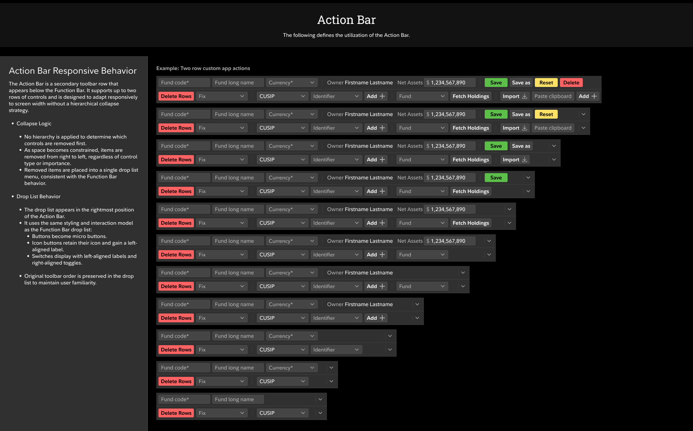
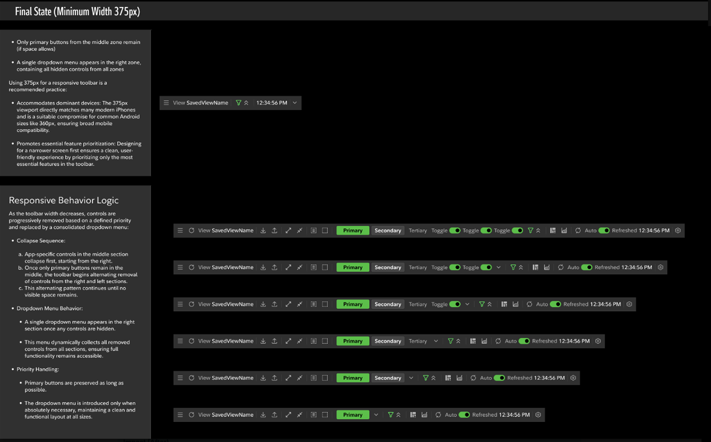
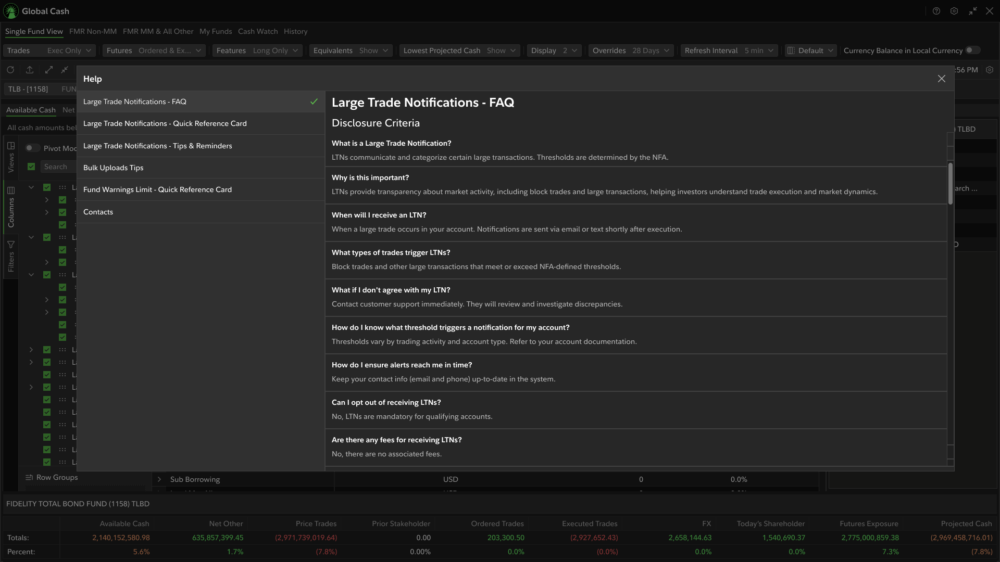

A dashboard built for passive summaries, not the intraday decisions traders actually needed to make.
Fidelity's Global Cash dashboard lacked real-time data clarity and the density required to support intraday liquidity decisions. Traders were working around the tool rather than through it — relying on manual validation, fragmented workflows, and inconsistent data presentation across Active Trader system components.
The existing system couldn't support trading-grade decision velocity. High-stakes data needed to be trusted instantly — not cross-referenced manually.
The platform's layout hierarchy didn't reflect how traders actually prioritized information. Timestamp trust, data freshness indicators, and multi-currency visibility were either absent or buried — adding friction at exactly the wrong moment.
The complaints were surface-level — the real problem was deeper
Users expressed frustration with slowness, scattered controls, and having to work around the dashboard. But they couldn't articulate why — they'd normalized the friction. No one asked for shared grid views. No one named AG Grid. They described symptoms, not causes.
Latent needs the users didn't know to request
Reading beneath the surface complaints, four higher-order problems emerged: the grid architecture itself couldn't support what traders needed; controls were scattered across the UI because developers had added functionality wherever space allowed — violating the heuristic that controls should be proximate to what they affect; there was no way to share views between team members; and users couldn't personalize column order to match their individual workflow habits. None of these were stated directly. All of them were solvable.
Embedded Senior UX Designer within Fidelity's Center of Excellence, leading the full redesign of Global Cash.
Six phases from discovery to delivery — each one building the foundation for the next.
Partnered with traders, product, engineering, and the CoE to validate real workflows, improve data density, and establish governed patterns that support trading-grade clarity across Global Cash.


Inline controls, shared views, column personalization
AG Grid solved all four latent needs in a single architectural decision: sort and filter controls moved inline to the grid itself (proximate to what they affect), shared local and team views gave the whole team visibility into each other's work, and column ordering let individual traders adapt the workspace to their personal habits — without any custom engineering.
One spec, three teams
Implementation-ready UX specs adopted by product and engineering across the Fixed Income ecosystem — reducing back-and-forth and accelerating delivery velocity.
Designing with the stack, not around it
Fidelity's platform runs on ASP.NET MVC, C#, IIS, and SQL Server — a .NET-native enterprise stack. That context shaped every design decision. ASP.NET MVC's server-rendered model and IIS hosting have specific implications for how state, data freshness, and component rendering behave. Designing without understanding that stack means handing engineers specs that look right but require invisible workarounds. Understanding it means the design and the implementation tell the same story.
The right component model for the right stack
A .NET-native platform like Fidelity's is exactly where Blazor's component model works cleanly — no framework impedance, no Node build pipeline conflicts, no DOM ownership fights with React or Vue. The same .NET stack knowledge that informed the Fidelity design work is what makes Blazor the right architectural call when the environment supports it — and what makes the token system framework-agnostic when it doesn't.
No logo, inconsistent branding across micro-apps — designed a scalable mark from scratch
The audit revealed Global Cash had no dedicated workspace logo and inconsistent branding across its micro-apps. I designed an SVG Global Cash logo built with ATN color tokens and scalable vector rules — a modular liquidity-flow mark combining globe and international currency symbols, aligned to Fidelity's Fixed Income workspace ecosystem. Variants were validated through team feedback and visual testing, producing a scalable asset prepared for cross-workspace reuse.
Identity that scales across the Fixed Income ecosystem
A unified Global Cash workspace identity reinforced product cohesion, improved navigation recognition, and established a reusable branding pattern that scales across future Fixed Income applications — extending the scope of the engagement from UX redesign to product identity.
Responsive Toolbar for Trading Workspaces
Beyond the workspace redesign, this engagement included a major design system contribution — a responsive toolbar component built for trading-grade density and reused across Global Cash, onboarding, and reporting modules. HarmonIX and Material couldn't support the required layout control, overflow logic, or action hierarchy needed in high-frequency trading environments. PrimeNG was selected as the base framework, enabling tighter control over breakpoint logic, header functionality, and overflow patterns.
The PrimeNG UI Kit (v17) aligned Figma components directly to implementation-ready structures — chosen over v18–v20 specifically because Fidelity's engineering teams had validated v17 across internal environments and preferred its stability over the newer token-based versions. Responsive behavior was validated directly in Angular across multiple engineering environments before the component was contributed to the CoE design system.
Unpredictable collapse, clipped controls, no action hierarchy
Toolbar collapse behavior was unpredictable, visible actions had no usage-based hierarchy, overflow patterns were inconsistent, controls were clipped in dense layouts, and headers couldn't support the required trading functions.
Reusable pattern across trading, onboarding & reporting
A responsive toolbar adapting to shrinking workspace layouts — usage-based action hierarchy, predictable overflow patterns, modular logic across breakpoints, PrimeNG-based components for trading-grade header functionality, validated across multiple engineering environments.
A platform traders could trust — and a model the organization could build on.
"The redesign elevated Global Cash from a data summary tool to a trading-grade liquidity workspace — recognized by CoE as the foundation for future Fixed Income modernization."
The work — from research to shipped workspace







AG Grid workspace — full panel layout, live data & column architecture
The prototype demonstrates the complete trading workspace — AG Grid with inline sort and filter controls, shared team views, column personalization, and the multi-panel layout that brought all four latent needs together in a single configurable workspace.
Start the system evaluation phase earlier and map trader mental models explicitly before touching layouts. The biggest friction points weren't visual — they were workflow sequencing issues that only surfaced once we had prototypes in front of active traders. Earlier exposure to real decision scenarios would have sharpened the information hierarchy faster.